Gün 1
Varış — Roma'ya ilk adım
14:00 sonrası · Trevi, Pantheon, Trastevere
14:00 – 15:00Otel yerleşme
Bavulları bırak, hafif bir şeyler ye. Gece Trastevere'de yemek yiyeceğiz, öğlen çok dolma.
16:00 – 18:30Tarihi merkez turu
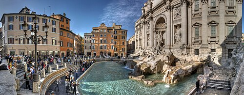
Trevi Çeşmesi
Dünyanın en ünlü Barok çeşmesi. Omzunun üzerinden bozuk para at — efsaneye göre geri dönürsün. Erken saatte kalabalık az olur.
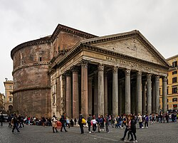
Pantheon
MÖ 125'ten beri ayakta duran, dünyanın en iyi korunmuş antik yapısı. Tavandaki oculus yağmurda büyülü bir manzara sunar.
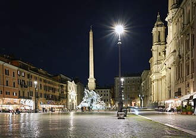
Piazza Navona
Roma'nın en canlı meydanı. Bernini'nin Dört Nehir Çeşmesi tam ortada. Sokak ressamları ve kafeler arasında nefes al.
20:00Trastevere — akşam yemeği
Roma'nın en otantik mahallesi. Dar taş sokaklar, sarmaşıklı duvarlar, aile restoranları. Cacio e pepe veya supplì mutlaka dene. Rezervasyon önerilir.
Gün 2
Antik Roma — tam gün
Kolezyum · Forum · Palatino · Monti
08:30 – 12:30Antik Roma kalbi
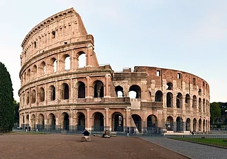
Kolezyum
50.000 seyircili gladyatör arenası. Online bilet al, kuyruk saatler sürebilir. Zemin katın altındaki tüneller ayrı tur gerektiriyor, değer.
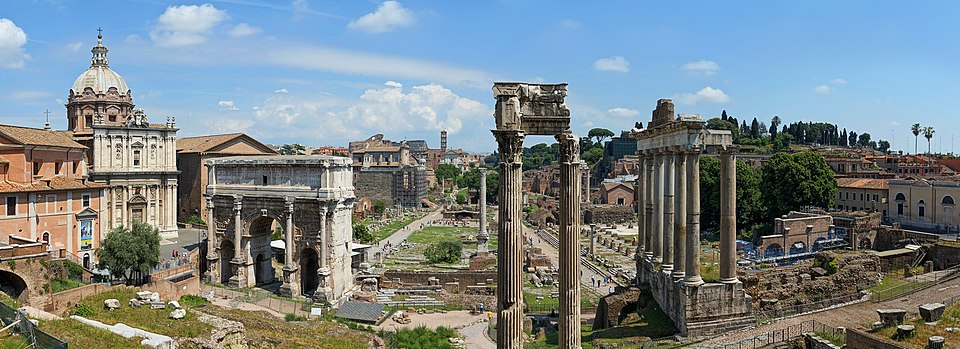
Roma Forumu
Antik Roma'nın siyasi ve ticari merkezi. Tapınak kalıntıları arasında yürümek tuhaf derecede etkileyici. Aynı biletle giriş.
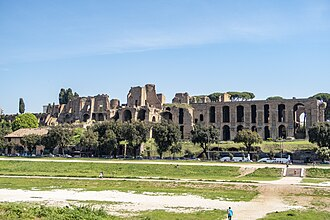
Palatino Tepesi
İmparatorların saraylarının bulunduğu tepe. Roma Forumu'na bakan en güzel manzara noktası buradan.
13:00 – 15:00Öğle + dinlenme
Forum çıkışına yakın Testaccio semtinde öğle. Sabah çok yürüdün — otelde kısa bir mola veya kafede otur.
15:30 – 18:00Öğleden sonra
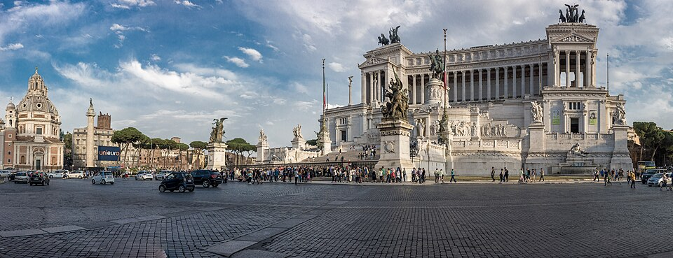
Vittoriano Teras
Üst terrasa asansörle çık. Roma'nın 360 derece panoraması. Özellikle öğleden sonra ışıkta muhteşem.
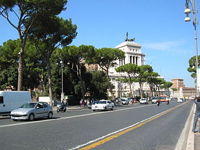
Monti Bölgesi
Roma'nın hipster mahallesi. Vintage dükkanlar, küçük barlar, yerel kafeler. Aperitivo saati için ideal.
Gün 3
Vatikan — tam gün
Müzeler · Sistine · Aziz Petrus · Tiber
Vatikan Müzeleri için mutlaka önceden online bilet al. Kıyafet kuralı: omuzlar ve dizler kapalı olmalı.
08:00 – 12:30Vatikan Müzeleri
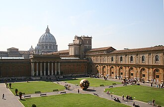
Vatikan Müzeleri
7 km yürüyüş mesafesinde sanat. Belvedere Avlusu, Haritalar Galerisi ve spiral merdiven fotoğraf için vazgeçilmez.
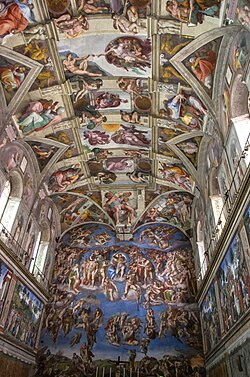
Sistine Şapeli
Michelangelo'nun 4 yılda boyadığı tavan freski. Fotoğraf çekmek yasak ama sessizce yukarı bak — kelimeler yetmez.
13:00 – 15:30Aziz Petrus
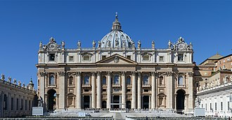
Aziz Petrus Bazilikası
Dünyanın en büyük kilisesi. Michelangelo'nun Pieta heykeli burada. Kubbeye çıkabilirsin — 320 basamak veya asansör.
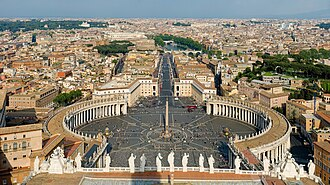
Aziz Petrus Meydanı
Bernini'nin kolonnatlı meydanı. 284 sütun, 140 aziz heykeli. Ortadaki obelisk MS 37'den bu yana burada duruyor.
18:00Tiber Nehri akşamı
Castel Sant'Angelo önünden Tiber boyunca yürü. Köprüden gün batımı manzarası. Lungotevere caddesinde aperitivo.
Gün 4
Opsiyon günü — tren kararı
Floransa A · Floransa+Pisa B · Sadece Pisa C
Opsiyon A
Sadece Floransa — en dengeli
07:00 Roma Termini → 09:00 Floransa (hızlı tren ~90dk)
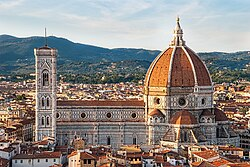
Floransa Katedrali (Duomo)
Brunelleschi'nin kırmızı kiremit kubbesi. İçi mütevazı ama kubbeye çıkış nefes kesiyor.

Ponte Vecchio
Arno üzerindeki tarihi köprü, üstünde mücevher dükkanları. Gün batımı ışığında Arno manzarası ikonik.
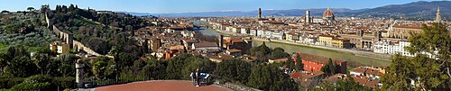
Piazzale Michelangelo
17:30'da burada ol. Floransa'nın tüm silueti önünde, gün batımı arkanda. Tripik fotoğraf garantisi.
19:00 Floransa → 20:30 Roma dönüş
DengeliYorucu değilŞehir hissi
Opsiyon B
Floransa + Pisa — yoğun gün
06:50 Roma → 08:20 Floransa
08:30–11:00 Duomo dışı + Ponte Vecchio hızlı
11:30 Floransa → 12:30 Pisa
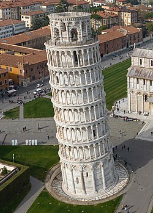
Pisa Kulesi + Campo dei Miracoli
12:30–15:00 arası. "Kuleyi tutan" fotoğrafı çek, etraf sana katılır. Vaftizane ve Katedral de aynı alanda.
15:30 Pisa → 19:00 Roma (uzun dönüş)
2 şehirÇok yorucuUzun tren
Opsiyon C
Sadece Pisa — rahat gün
08:00 Roma → 11:30 Pisa
11:30–14:30 Kule + Campo dei Miracoli · öğle
15:00–19:00 Roma dönüş
En az stresAz içerik
Gün 5
Dönüş — son sabah
Trevi · Kahve · Havaalanı
Bavulları erken hazırla veya otele bırak (genelde 15:00'e kadar saklarlar). Sabahı yavaş değerlendir.
Trevi'ye son uğrayış
Sabah erken saatte kalabalıksız bir Trevi. İlk günün kalabalığıyla kıyasla — çok farklı bir his.
Roma kahvesi ritüeli: ayakta espresso, bar üzerinde. Oturarak içmek genelde 2-3 kat pahalı.